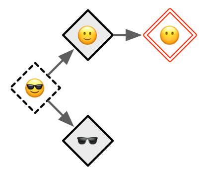
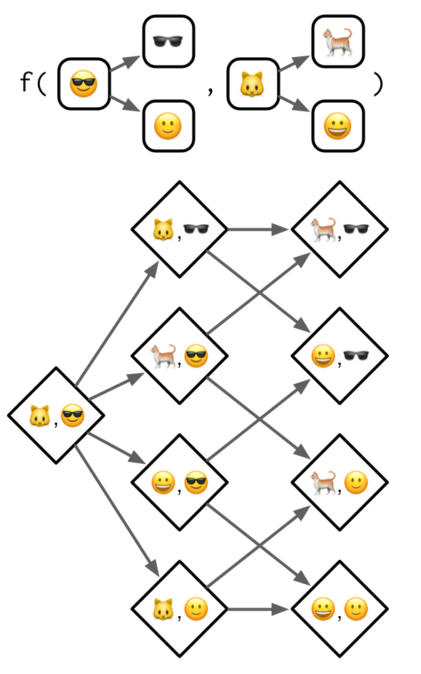

15 S4
15.1 Introduction
S4 provides a formal approach to functional OOP. The underlying ideas are similar to S3 (the topic of Chapter 13), but implementation is much stricter and makes use of specialised functions for creating classes (setClass()), generics (setGeneric()), and methods (setMethod()). Additionally, S4 provides both multiple inheritance (i.e.a class can have multiple parents) and multiple dispatch (i.e.method dispatch can use the class of multiple arguments).
An important new component of S4 is the slot, a named component of the object that is accessed using the specialised subsetting operator @ (pronounced at). The set of slots, and their classes, forms an important part of the definition of an S4 class.
Outline
Section 15.2 gives a quick overview of the main components of S4: classes, generics, and methods.
Section 15.3 dives into the details of S4 classes, including prototypes, constructors, helpers, and validators.
Section 15.4 shows you how to create new S4 generics, and how to supply those generics with methods. Youll also learn about accessor functions which are designed to allow users to safely inspect and modify object slots.
Section 15.5 dives into the full details of method dispatch in S4. The basic idea is simple, then it rapidly gets more complex once multiple inheritance and multiple dispatch are combined.
Section 15.6 discusses the interaction between S4 and S3, showing you how to use them together.
Learning more
Like the other OO chapters, the focus here will be on how S4 works, not how to deploy it most effectively. If you do want to use it in practice, there are two main challenges:
There is no one reference that will answer all your questions about S4.
Rs built-in documentation sometimes clashes with community best practices.
As you move towards more advanced usage, you will need to piece together needed information by carefully reading the documentation, asking questions on StackOverflow, and performing experiments. Some recommendations:
The Bioconductor community is a long-term user of S4 and has produced much of the best material about its effective use. Start with S4 classes and methods taught by Martin Morgan and Herv Pags, or check for a newer version at Bioconductor course materials.
Martin Morgan is a member of R-core and the project lead of Bioconductor. Hes a world expert on the practical use of S4, and I recommend reading anything he has written about it, starting with the questions he has answered on stackoverflow.
John Chambers is the author of the S4 system, and provides an overview
of its motivation and historical context in Object-oriented programming, functional programming and R.77 For a fuller exploration of S4, see his book Software for Data Analysis.78
Prerequisites
All functions related to S4 live in the methods package. This package is always available when youre running R interactively, but may not be available when running R in batch mode, i.e.from Rscript79. For this reason, its a good idea to call library(methods) whenever you use S4. This also signals to the reader that youll be using the S4 object system.
library(methods)15.2 Basics
Well start with a quick overview of the main components of S4. You define an S4 class by calling setClass() with the class name and a definition of its slots, and the names and classes of the class data:
setClass("Person",
slots = c(
name = "character",
age = "numeric"
)
)Once the class is defined, you can construct new objects from it by calling new() with the name of the class and a value for each slot:
john <- new("Person", name = "John Smith", age = NA_real_)
Given an S4 object you can see its class with is() and access slots with @ (equivalent to $) and slot() (equivalent to [[):
is(john)
#> [1] "Person"
john@name
#> [1] "John Smith"
slot(john, "age")
#> [1] NAGenerally, you should only use @ in your methods. If youre working with someone elses class, look for accessor functions that allow you to safely set and get slot values. As the developer of a class, you should also provide your own accessor functions. Accessors are typically S4 generics allowing multiple classes to share the same external interface.
Here well create a setter and getter for the age slot by first creating generics with setGeneric():
setGeneric("age", function(x) standardGeneric("age"))
setGeneric("age<-", function(x, value) standardGeneric("age<-"))And then defining methods with setMethod():
setMethod("age", "Person", function(x) x@age)
setMethod("age<-", "Person", function(x, value) {
x@age <- value
x
})
age(john) <- 50
age(john)
#> [1] 50If youre using an S4 class defined in a package, you can get help on it with class?Person. To get help for a method, put ? in front of a call (e.g.?age(john)) and ? will use the class of the arguments to figure out which help file you need.
Finally, you can use sloop functions to identify S4 objects and generics found in the wild:
sloop::otype(john)
#> [1] "S4"
sloop::ftype(age)
#> [1] "S4" "generic"15.2.1 Exercises
lubridate::period()returns an S4 class. What slots does it have? What class is each slot? What accessors does it provide?What other ways can you find help for a method? Read
?"?"and summarise the details.
15.3 Classes
To define an S4 class, call setClass() with three arguments:
The class name. By convention, S4 class names use
UpperCamelCase.A named character vector that describes the names and classes of the slots (fields). For example, a person might be represented by a character name and a numeric age:
c(name = "character", age = "numeric"). The pseudo-classANYallows a slot to accept objects of any type.A prototype, a list of default values for each slot. Technically, the prototype is optional80, but you should always provide it.
The code below illustrates the three arguments by creating a Person class with character name and numeric age slots.
setClass("Person",
slots = c(
name = "character",
age = "numeric"
),
prototype = list(
name = NA_character_,
age = NA_real_
)
)
me <- new("Person", name = "Hadley")
str(me)
#> Formal class 'Person' [package ".GlobalEnv"] with 2 slots
#> ..@ name: chr "Hadley"
#> ..@ age : num NA15.3.1 Inheritance
There is one other important argument to setClass(): contains. This specifies a class (or classes) to inherit slots and behaviour from. For example, we can create an Employee class that inherits from the Person class, adding an extra slot that describes their boss.
setClass("Employee",
contains = "Person",
slots = c(
boss = "Person"
),
prototype = list(
boss = new("Person")
)
)
str(new("Employee"))
#> Formal class 'Employee' [package ".GlobalEnv"] with 3 slots
#> ..@ boss:Formal class 'Person' [package ".GlobalEnv"] with 2 slots
#> .. .. ..@ name: chr NA
#> .. .. ..@ age : num NA
#> ..@ name: chr NA
#> ..@ age : num NAsetClass() has 9 other arguments but they are either deprecated or not recommended.
15.3.2 Introspection
To determine what classes an object inherits from, use is():
is(new("Person"))
#> [1] "Person"
is(new("Employee"))
#> [1] "Employee" "Person"To test if an object inherits from a specific class, use the second argument of is():
is(john, "Person")
#> [1] TRUE15.3.3 Redefinition
In most programming languages, class definition occurs at compile-time and object construction occurs later, at run-time. In R, however, both definition and construction occur at run time. When you call setClass(), you are registering a class definition in a (hidden) global variable. As with all state-modifying functions you need to use setClass() with care. Its possible to create invalid objects if you redefine a class after already having instantiated an object:
setClass("A", slots = c(x = "numeric"))
a <- new("A", x = 10)
setClass("A", slots = c(a_different_slot = "numeric"))
a
#> An object of class "A"
#> Slot "a_different_slot":
#> Error in slot(object, what): no slot of name "a_different_slot" for this object of class "A"This can cause confusion during interactive creation of new classes. (R6 classes have the same problem, as described in Section 14.2.2.)
15.3.4 Helper
new() is a low-level constructor suitable for use by you, the developer. User-facing classes should always be paired with a user-friendly helper. A helper should always:
Have the same name as the class, e.g.
myclass().Have a thoughtfully crafted user interface with carefully chosen default values and useful conversions.
Create carefully crafted error messages tailored towards an end-user.
Finish by calling
methods::new().
The Person class is so simple so a helper is almost superfluous, but we can use it to clearly define the contract: age is optional but name is required. Well also coerce age to a double so the helper also works when passed an integer.
Person <- function(name, age = NA) {
age <- as.double(age)
new("Person", name = name, age = age)
}
Person("Hadley")
#> An object of class "Person"
#> Slot "name":
#> [1] "Hadley"
#>
#> Slot "age":
#> [1] NA15.3.5 Validator
The constructor automatically checks that the slots have correct classes:
Person(mtcars)
#> Error in validObject(.Object): invalid class "Person" object: invalid object for slot "name" in class "Person": got class "data.frame", should be or extend class "character"You will need to implement more complicated checks (i.e.checks that involve lengths, or multiple slots) yourself. For example, we might want to make it clear that the Person class is a vector class, and can store data about multiple people. Thats not currently clear because @name and @age can be different lengths:
Person("Hadley", age = c(30, 37))
#> An object of class "Person"
#> Slot "name":
#> [1] "Hadley"
#>
#> Slot "age":
#> [1] 30 37To enforce these additional constraints we write a validator with setValidity(). It takes a class and a function that returns TRUE if the input is valid, and otherwise returns a character vector describing the problem(s):
setValidity("Person", function(object) {
if (length(object@name) != length(object@age)) {
"@name and @age must be same length"
} else {
TRUE
}
})Now we can no longer create an invalid object:
Person("Hadley", age = c(30, 37))
#> Error in validObject(.Object): invalid class "Person" object: @name and @age must be same lengthNB: The validity method is only called automatically by new(), so you can still create an invalid object by modifying it:
alex <- Person("Alex", age = 30)
alex@age <- 1:10You can explicitly check the validity yourself by calling validObject():
validObject(alex)
#> Error in validObject(alex): invalid class "Person" object: @name and @age must be same lengthIn Section 15.4.4, well use validObject() to create accessors that can not create invalid objects.
15.3.6 Exercises
Extend the Person class with fields to match
utils::person(). Think about what slots you will need, what class each slot should have, and what youll need to check in your validity method.What happens if you define a new S4 class that doesnt have any slots? (Hint: read about virtual classes in
?setClass.)Imagine you were going to reimplement factors, dates, and data frames in S4. Sketch out the
setClass()calls that you would use to define the classes. Think about appropriateslotsandprototype.
15.4 Generics and methods
The job of a generic is to perform method dispatch, i.e.find the specific implementation for the combination of classes passed to the generic. Here youll learn how to define S4 generics and methods, then in the next section well explore precisely how S4 method dispatch works.
To create a new S4 generic, call setGeneric() with a function that calls standardGeneric():
setGeneric("myGeneric", function(x) standardGeneric("myGeneric"))By convention, new S4 generics should use lowerCamelCase.
It is bad practice to use {} in the generic as it triggers a special case that is more expensive, and generally best avoided.
# Don't do this!
setGeneric("myGeneric", function(x) {
standardGeneric("myGeneric")
})15.4.1 Signature
Like setClass(), setGeneric() has many other arguments. There is only one that you need to know about: signature. This allows you to control the arguments that are used for method dispatch. If signature is not supplied, all arguments (apart from ...) are used. It is occasionally useful to remove arguments from dispatch. This allows you to require that methods provide arguments like verbose = TRUE or quiet = FALSE, but they dont take part in dispatch.
setGeneric("myGeneric",
function(x, ..., verbose = TRUE) standardGeneric("myGeneric"),
signature = "x"
)15.4.2 Methods
A generic isnt useful without some methods, and in S4 you define methods with setMethod(). There are three important arguments: the name of the generic, the name of the class, and the method itself.
setMethod("myGeneric", "Person", function(x) {
# method implementation
})More formally, the second argument to setMethod() is called the signature. In S4, unlike S3, the signature can include multiple arguments. This makes method dispatch in S4 substantially more complicated, but avoids having to implement double-dispatch as a special case. Well talk more about multiple dispatch in the next section. setMethod() has other arguments, but you should never use them.
To list all the methods that belong to a generic, or that are associated with a class, use methods("generic") or methods(class = "class"); to find the implementation of a specific method, use selectMethod("generic", "class").
15.4.3 Show method
The most commonly defined S4 method that controls printing is show(), which controls how the object appears when it is printed. To define a method for an existing generic, you must first determine the arguments. You can get those from the documentation or by looking at the args() of the generic:
args(getGeneric("show"))
#> function (object)
#> NULLOur show method needs to have a single argument object:
setMethod("show", "Person", function(object) {
cat(is(object)[[1]], "\n",
" Name: ", object@name, "\n",
" Age: ", object@age, "\n",
sep = ""
)
})
john
#> Person
#> Name: John Smith
#> Age: 5015.4.4 Accessors
Slots should be considered an internal implementation detail: they can change without warning and user code should avoid accessing them directly. Instead, all user-accessible slots should be accompanied by a pair of accessors. If the slot is unique to the class, this can just be a function:
person_name <- function(x) x@nameTypically, however, youll define a generic so that multiple classes can use the same interface:
setGeneric("name", function(x) standardGeneric("name"))
setMethod("name", "Person", function(x) x@name)
name(john)
#> [1] "John Smith"If the slot is also writeable, you should provide a setter function. You should always include validObject() in the setter to prevent the user from creating invalid objects.
setGeneric("name<-", function(x, value) standardGeneric("name<-"))
setMethod("name<-", "Person", function(x, value) {
x@name <- value
validObject(x)
x
})
name(john) <- "Jon Smythe"
name(john)
#> [1] "Jon Smythe"
name(john) <- letters
#> Error in validObject(x): invalid class "Person" object: @name and @age must be same length(If the name<- notation is unfamiliar, review Section 6.8.)
15.4.5 Exercises
Add
age()accessors for thePersonclass.In the definition of the generic, why is it necessary to repeat the name of the generic twice?
Why does the
show()method defined in Section 15.4.3 useis(object)[[1]]? (Hint: try printing the employee subclass.)What happens if you define a method with different argument names to the generic?
15.5 Method dispatch
S4 dispatch is complicated because S4 has two important features:
- Multiple inheritance, i.e.a class can have multiple parents,
- Multiple dispatch, i.e.a generic can use multiple arguments to pick a method.
These features make S4 very powerful, but can also make it hard to understand which method will get selected for a given combination of inputs. In practice, keep method dispatch as simple as possible by avoiding multiple inheritance, and reserving multiple dispatch only for where it is absolutely necessary.
But its important to describe the full details, so here well start simple with single inheritance and single dispatch, and work our way up to the more complicated cases. To illustrate the ideas without getting bogged down in the details, well use an imaginary class graph based on emoji:

Emoji give us very compact class names that evoke the relationships between the classes. It should be straightforward to remember that inherits from which inherits from , and that inherits from both and .
15.5.1 Single dispatch
Lets start with the simplest case: a generic function that dispatches on a single class with a single parent. The method dispatch here is simple so its a good place to define the graphical conventions well use for the more complex cases.

There are two parts to this diagram:
The top part,
f(...), defines the scope of the diagram. Here we have a generic with one argument, that has a class hierarchy that is three levels deep.The bottom part is the method graph and displays all the possible methods that could be defined. Methods that exist, i.e.that have been defined with
setMethod(), have a grey background.
To find the method that gets called, you start with the most specific class of the actual arguments, then follow the arrows until you find a method that exists. For example, if you called the function with an object of class you would follow the arrow right to find the method defined for the more general class. If no method is found, method dispatch has failed and an error is thrown. In practice, this means that you should alway define methods defined for the terminal nodes, i.e.those on the far right.
There are two pseudo-classes that you can define methods for. These are called pseudo-classes because they dont actually exist, but allow you to define useful behaviours. The first pseudo-class is ANY which matches any class81. For technical reasons that well get to later, the link to the ANY method is longer than the links between the other classes:

The second pseudo-class is MISSING. If you define a method for this pseudo-class, it will match whenever the argument is missing. Its not useful for single dispatch, but is important for functions like + and - that use double dispatch and behave differently depending on whether they have one or two arguments.
15.5.2 Multiple inheritance
Things get more complicated when the class has multiple parents.

The basic process remains the same: you start from the actual class supplied to the generic, then follow the arrows until you find a defined method. The wrinkle is that now there are multiple arrows to follow, so you might find multiple methods. If that happens, you pick the method that is closest, i.e.requires travelling the fewest arrows.
NB: While the method graph is a powerful metaphor for understanding method dispatch, implementing it in this way would be rather inefficient, so the actual approach that S4 uses is somewhat different. You can read the details in ?Methods_Details.
What happens if methods are the same distance? For example, imagine weve defined methods for and , and we call the generic with . Note that no method can be found for the class, which Ill highlight with a red double outline.

This is called an ambiguous method, and in diagrams Ill illustrate it with a thick dotted border. When this happens in R, youll get a warning, and the method for the class that comes earlier in the alphabet will be picked (this is effectively random and should not be relied upon). When you discover ambiguity you should always resolve it by providing a more precise method:

The fallback ANY method still exists but the rules are little more complex. As indicated by the wavy dotted lines, the ANY method is always considered further away than a method for a real class. This means that it will never contribute to ambiguity.

With multiple inheritances it is hard to simultaneously prevent ambiguity, ensure that every terminal method has an implementation, and minimise the number of defined methods (in order to benefit from OOP). For example, of the six ways to define only two methods for this call, only one is free from problems. For this reason, I recommend using multiple inheritance with extreme care: you will need to carefully think about the method graph and plan accordingly.

15.5.3 Multiple dispatch
Once you understand multiple inheritance, understanding multiple dispatch is straightforward. You follow multiple arrows in the same way as previously, but now each method is specified by two classes (separated by a comma).

Im not going to show examples of dispatching on more than two arguments, but you can follow the basic principles to generate your own method graphs.
The main difference between multiple inheritance and multiple dispatch is that there are many more arrows to follow. The following diagram shows four defined methods which produce two ambiguous cases:

Multiple dispatch tends to be less tricky to work with than multiple inheritance because there are usually fewer terminal class combinations. In this example, theres only one. That means, at a minimum, you can define a single method and have default behaviour for all inputs.
15.5.4 Multiple dispatch and multiple inheritance
Of course you can combine multiple dispatch with multiple inheritance:

A still more complicated case dispatches on two classes, both of which have multiple inheritance:

As the method graph gets more and more complicated it gets harder and harder to predict which method will get called given a combination of inputs, and it gets harder and harder to make sure that you havent introduced ambiguity. If you have to draw diagrams to figure out what method is actually going to be called, its a strong indication that you should go back and simplify your design.
15.5.5 Exercises
Draw the method graph for
f(,).Draw the method graph for
f(, ,).Take the last example which shows multiple dispatch over two classes that use multiple inheritance. What happens if you define a method for all terminal classes? Why does method dispatch not save us much work here?
15.6 S4 and S3
When writing S4 code, youll often need to interact with existing S3 classes and generics. This section describes how S4 classes, methods, and generics interact with existing code.
15.6.1 Classes
In slots and contains you can use S4 classes, S3 classes, or the implicit class (Section 13.7.1) of a base type. To use an S3 class, you must first register it with setOldClass(). You call this function once for each S3 class, giving it the class attribute. For example, the following definitions are already provided by base R:
setOldClass("data.frame")
setOldClass(c("ordered", "factor"))
setOldClass(c("glm", "lm"))However, its generally better to be more specific and provide a full S4 definition with slots and a prototype:
setClass("factor",
contains = "integer",
slots = c(
levels = "character"
),
prototype = structure(
integer(),
levels = character()
)
)
setOldClass("factor", S4Class = "factor")Generally, these definitions should be provided by the creator of the S3 class. If youre trying to build an S4 class on top of an S3 class provided by a package, you should request that the package maintainer add this call to their package, rather than adding it to your own code.
If an S4 object inherits from an S3 class or a base type, it will have a special virtual slot called .Data. This contains the underlying base type or S3 object:
RangedNumeric <- setClass(
"RangedNumeric",
contains = "numeric",
slots = c(min = "numeric", max = "numeric"),
prototype = structure(numeric(), min = NA_real_, max = NA_real_)
)
rn <- RangedNumeric(1:10, min = 1, max = 10)
rn@min
#> [1] 1
rn@.Data
#> [1] 1 2 3 4 5 6 7 8 9 10It is possible to define S3 methods for S4 generics, and S4 methods for S3 generics (provided youve called setOldClass()). However, its more complicated than it might appear at first glance, so make sure you thoroughly read ?Methods_for_S3.
15.6.2 Generics
As well as creating a new generic from scratch, its also possible to convert an existing S3 generic to an S4 generic:
setGeneric("mean")In this case, the existing function becomes the default (ANY) method:
selectMethod("mean", "ANY")
#> Method Definition (Class "derivedDefaultMethod"):
#>
#> function (x, ...)
#> UseMethod("mean")
#> <bytecode: 0x55893d6f9d38>
#> <environment: namespace:base>
#>
#> Signatures:
#> x
#> target "ANY"
#> defined "ANY"NB: setMethod() will automatically call setGeneric() if the first argument isnt already a generic, enabling you to turn any existing function into an S4 generic. It is OK to convert an existing S3 generic to S4, but you should avoid converting regular functions to S4 generics in packages because that requires careful coordination if done by multiple packages.
15.6.3 Exercises
What would a full
setOldClass()definition look like for an ordered factor (i.e.addslotsandprototypethe definition above)?Define a
lengthmethod for thePersonclass.
John M Chambers, Object-Oriented Programming, Functional Programming and R, Statistical Science 29, no. 2 (2014): 16780, https://projecteuclid.org/download/pdfview_1/euclid.ss/1408368569.
John M Chambers, Software for Data Analysis: Programming with R (Springer, 2008).
This is a historical quirk introduced because the methods package used to take a long time to load and
Rscriptis optimised for fast command line invocation.?setClassrecommends that you avoid theprototypeargument, but this is generally considered to be bad advice.The S4
ANYpseudo-class plays the same role as the S3defaultpseudo-class.